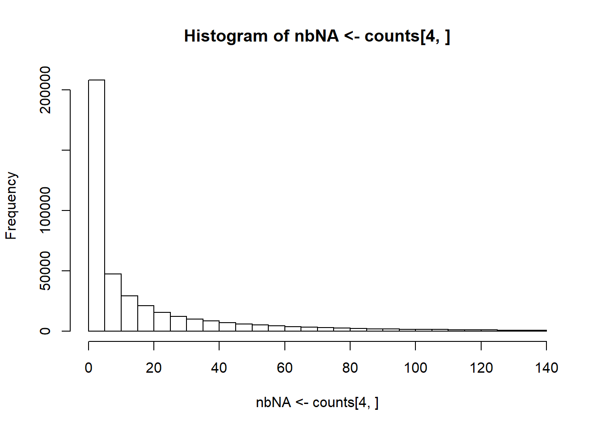

Chapter 3 Preprocessing
In this section, I am including conversion, quality control and imputation.
3.1 Conversion and quality control of PLINK files
PLINK is very efficient for conversion and quality control of multiple formats, so I have decided just using it.
In {bigsnpr}, I provide some wrappers to PLINK for ease of use:
download_plink()anddownload_plink2()for downloading the latest stable versions of PLINK 1.9 and 2.0.snp_plinkQC()for quality control (QC) and conversion to bed/bim/fam.snp_plinkKINGQC()for QC on relatedness based on KING-robust kinship estimator. Usingmake.bed = FALSEallows for computing related pairs only, i.e. reporting a data frame without producing new bed/bim/fam files.snp_plinkIBDQC()for QC based on identity-by-descent (IBD) computed by PLINK using its method-of-moments.snp_plinkRmSamples()for producing new PLINK files after having removed some individuals.For any other PLINK function, I recommend calling PLINK directly from thanks to system calls and package {glue}, e.g.
plink <- download_plink("tmp-data") system(glue::glue( "{plink} --version" ))#> PLINK v1.90b6.21 64-bit (19 Oct 2020)
3.2 Imputation
Note that most functions from {bigstatsr} and {bigsnpr} don’t handle missing values.
Simple imputation (e.g. by the mean) of a ‘double’ FBM can be performed by blocks using e.g. as explained in this vignette.
In {bigsnpr}, to perform simple imputation of genotyped data, you can use snp_fastImputeSimple(). You can also use snp_fastImpute() that uses XGBoost models to impute genotyped data (slower but still fast enough, described in Privé et al. (2018)).
3.3 Exercise: preprocessing
For the exercises, we will use the data provided in Reed et al. (2015).
This can be downloaded using
url <- "https://www.mtholyoke.edu/courses/afoulkes/Data/statsTeachR/"
sapply(paste0(url, "GWAS_data", c(".bed", ".bim", ".fam")),
runonce::download_file, dir = "tmp-data")#> https://www.mtholyoke.edu/courses/afoulkes/Data/statsTeachR/GWAS_data.bed
#> "tmp-data/GWAS_data.bed"
#> https://www.mtholyoke.edu/courses/afoulkes/Data/statsTeachR/GWAS_data.bim
#> "tmp-data/GWAS_data.bim"
#> https://www.mtholyoke.edu/courses/afoulkes/Data/statsTeachR/GWAS_data.fam
#> "tmp-data/GWAS_data.fam"For some reason, this data is not ordered by chromosome and position; we can use PLINK to get an ordered version of this using
library(bigsnpr)
plink <- download_plink("tmp-data")system(glue::glue(
"{plink} --bfile tmp-data/GWAS_data",
" --make-bed --out tmp-data/GWAS_data_sorted"
))#> PLINK v1.90b6.21 64-bit (19 Oct 2020) www.cog-genomics.org/plink/1.9/
#> (C) 2005-2020 Shaun Purcell, Christopher Chang GNU General Public License v3
#> Logging to tmp-data/GWAS_data_sorted.log.
#> Options in effect:
#> --bfile tmp-data/GWAS_data
#> --make-bed
#> --out tmp-data/GWAS_data_sorted
#>
#> 32574 MB RAM detected; reserving 16287 MB for main workspace.
#> 500000 variants loaded from .bim file.
#> 1401 people (937 males, 464 females) loaded from .fam.
#> 933 phenotype values loaded from .fam.
#> Using 1 thread (no multithreaded calculations invoked).
#> Before main variant filters, 1401 founders and 0 nonfounders present.
#> Calculating allele frequencies... 0%1%2%3%4%5%6%7%8%9%10%11%12%13%14%15%16%17%18%19%20%21%22%23%24%25%26%27%28%29%30%31%32%33%34%35%36%37%38%39%40%41%42%43%44%45%46%47%48%49%50%51%52%53%54%55%56%57%58%59%60%61%62%63%64%65%66%67%68%69%70%71%72%73%74%75%76%77%78%79%80%81%82%83%84%85%86%87%88%89%90%91%92%93%94%95%96%97%98%99% done.
#> Total genotyping rate is 0.977593.
#> 500000 variants and 1401 people pass filters and QC.
#> Among remaining phenotypes, 463 are cases and 470 are controls. (468
#> phenotypes are missing.)
#> --make-bed to tmp-data/GWAS_data_sorted.bed + tmp-data/GWAS_data_sorted.bim +
#> tmp-data/GWAS_data_sorted.fam ... 0%1%2%3%4%5%6%7%8%9%10%11%12%13%14%15%16%17%18%19%20%21%22%23%24%25%26%27%28%29%30%31%32%33%34%35%36%37%38%39%40%41%42%43%44%45%46%47%48%49%50%51%52%53%54%55%56%57%58%59%60%61%62%63%64%65%66%67%68%69%70%71%72%73%74%75%76%77%78%79%80%81%82%83%84%85%86%87%88%89%90%91%92%93%94%95%96%97%98%99%done.As you can see from PLINK output, this data contains 1401 individuals and 500,000 variants, with a few missing values.
We can then perform some quality control using
bedfile2 <- snp_plinkQC(plink, "tmp-data/GWAS_data_sorted")#> PLINK v1.90b6.21 64-bit (19 Oct 2020) www.cog-genomics.org/plink/1.9/
#> (C) 2005-2020 Shaun Purcell, Christopher Chang GNU General Public License v3
#> Logging to tmp-data/GWAS_data_sorted_QC.log.
#> Options in effect:
#> --bfile tmp-data/GWAS_data_sorted
#> --geno 0.1
#> --hwe 1e-50
#> --maf 0.01
#> --make-bed
#> --mind 0.1
#> --out tmp-data/GWAS_data_sorted_QC
#>
#> 32574 MB RAM detected; reserving 16287 MB for main workspace.
#> 500000 variants loaded from .bim file.
#> 1401 people (937 males, 464 females) loaded from .fam.
#> 933 phenotype values loaded from .fam.
#> 0 people removed due to missing genotype data (--mind).
#> Using 1 thread (no multithreaded calculations invoked).
#> Before main variant filters, 1401 founders and 0 nonfounders present.
#> Calculating allele frequencies... 0%1%2%3%4%5%6%7%8%9%10%11%12%13%14%15%16%17%18%19%20%21%22%23%24%25%26%27%28%29%30%31%32%33%34%35%36%37%38%39%40%41%42%43%44%45%46%47%48%49%50%51%52%53%54%55%56%57%58%59%60%61%62%63%64%65%66%67%68%69%70%71%72%73%74%75%76%77%78%79%80%81%82%83%84%85%86%87%88%89%90%91%92%93%94%95%96%97%98%99% done.
#> Total genotyping rate is 0.977593.
#> 27390 variants removed due to missing genotype data (--geno).
#> --hwe: 91 variants removed due to Hardy-Weinberg exact test.
#> 67856 variants removed due to minor allele threshold(s)
#> (--maf/--max-maf/--mac/--max-mac).
#> 404663 variants and 1401 people pass filters and QC.
#> Among remaining phenotypes, 463 are cases and 470 are controls. (468
#> phenotypes are missing.)
#> --make-bed to tmp-data/GWAS_data_sorted_QC.bed +
#> tmp-data/GWAS_data_sorted_QC.bim + tmp-data/GWAS_data_sorted_QC.fam ... 0%1%2%3%4%5%6%7%8%9%10%11%12%13%14%15%16%17%18%19%20%21%22%23%24%25%26%27%28%29%30%31%32%33%34%35%36%37%38%39%40%41%42%43%44%45%46%47%48%49%50%51%52%53%54%55%56%57%58%59%60%61%62%63%64%65%66%67%68%69%70%71%72%73%74%75%76%77%78%79%80%81%82%83%84%85%86%87%88%89%90%91%92%93%94%95%96%97%98%99%done.404,663 variants are remaining after this quality control; we can then read this data into an R object called bigSNP using
(rds <- snp_readBed2(bedfile2, ncores = nb_cores()))#> [1] "C:\\Users\\au639593\\Desktop\\bigsnpr-extdoc\\tmp-data\\GWAS_data_sorted_QC.rds"obj.bigsnp <- snp_attach(rds)
str(obj.bigsnp, max.level = 2)#> List of 3
#> $ genotypes:Reference class 'FBM.code256' [package "bigstatsr"] with 16 fields
#> ..and 26 methods, of which 12 are possibly relevant:
#> .. add_columns, as.FBM, bm, bm.desc, check_dimensions,
#> .. check_write_permissions, copy#envRefClass, initialize,
#> .. initialize#FBM, save, show#envRefClass, show#FBM
#> $ fam :'data.frame': 1401 obs. of 6 variables:
#> ..$ family.ID : int [1:1401] 10002 10004 10005 10007 10008 10009 10010 10011 10012 10013 ...
#> ..$ sample.ID : int [1:1401] 1 1 1 1 1 1 1 1 1 1 ...
#> ..$ paternal.ID: int [1:1401] 0 0 0 0 0 0 0 0 0 0 ...
#> ..$ maternal.ID: int [1:1401] 0 0 0 0 0 0 0 0 0 0 ...
#> ..$ sex : int [1:1401] 1 2 1 1 1 1 1 2 1 2 ...
#> ..$ affection : int [1:1401] 1 1 2 1 2 2 2 1 2 -9 ...
#> $ map :'data.frame': 404663 obs. of 6 variables:
#> ..$ chromosome : int [1:404663] 1 1 1 1 1 1 1 1 1 1 ...
#> ..$ marker.ID : chr [1:404663] "rs12565286" "rs3094315" "rs2980319" "rs2980300" ...
#> ..$ genetic.dist: int [1:404663] 0 0 0 0 0 0 0 0 0 0 ...
#> ..$ physical.pos: int [1:404663] 721290 752566 777122 785989 798959 947034 949608 1018704 1041700 1129672 ...
#> ..$ allele1 : chr [1:404663] "G" "C" "A" "A" ...
#> ..$ allele2 : chr [1:404663] "C" "T" "T" "G" ...
#> - attr(*, "class")= chr "bigSNP"We can store some extra information on the individuals (e.g. some phenotypes):
clinical <- bigreadr::fread2(
runonce::download_file(paste0(url, "GWAS_clinical.csv"), dir = "tmp-data"))
# Get the same order as for the genotypes
# (to match over multiple columns, use `vctrs::vec_match()`)
pheno <- clinical[match(obj.bigsnp$fam$family.ID, clinical$FamID), ]
# Some verif
stopifnot(all.equal(obj.bigsnp$fam$sex, pheno$sex))
# Update the $fam component
obj.bigsnp$fam <- cbind(obj.bigsnp$fam, pheno[-c(1, 3)])Recall that this data contains some missing values; you can get some counts per variant using
G <- obj.bigsnp$genotypes
counts <- big_counts(G)
counts[, 1:8]#> [,1] [,2] [,3] [,4] [,5] [,6] [,7] [,8]
#> 0 1247 958 1057 988 831 1201 496 386
#> 1 131 362 316 370 502 115 676 730
#> 2 6 66 28 25 67 7 165 216
#> <NA> 17 15 0 18 1 78 64 69hist(nbNA <- counts[4, ])
We can e.g. perform a quick imputation by the mean using
G2 <- snp_fastImputeSimple(G, method = "mean2", ncores = nb_cores())
big_counts(G2, ind.col = 1:8)#> [,1] [,2] [,3] [,4] [,5] [,6] [,7] [,8]
#> 0 1247 958 1057 988 831 1201 496 386
#> 1 131 362 316 370 502 115 676 730
#> 2 6 66 28 25 67 7 165 216
#> <NA> 0 0 0 0 0 0 0 0
#> 0.01 0 0 0 0 0 0 0 0
#> 0.02 0 0 0 0 0 0 0 0
#> [ reached getOption("max.print") -- omitted 196 rows ]big_counts(G, ind.col = 1:8)#> [,1] [,2] [,3] [,4] [,5] [,6] [,7] [,8]
#> 0 1247 958 1057 988 831 1201 496 386
#> 1 131 362 316 370 502 115 676 730
#> 2 6 66 28 25 67 7 165 216
#> <NA> 17 15 0 18 1 78 64 69G still has missing values, but G2 does not. Note that both are using the same data, the difference is that they using a different code to decode the underlying data:
G$code256#> [1] 0 1 2 NA NA NA NA NA NA NA NA NA NA NA NA NA NA NA NA NA NA NA NA
#> [24] NA NA NA NA NA NA NA NA NA NA NA NA NA NA NA NA NA NA NA NA NA NA NA
#> [47] NA NA NA NA
#> [ reached getOption("max.print") -- omitted 206 entries ]G2$code256#> [1] 0.00 1.00 2.00 NA 0.00 1.00 2.00 0.00 0.01 0.02 0.03 0.04 0.05 0.06
#> [15] 0.07 0.08 0.09 0.10 0.11 0.12 0.13 0.14 0.15 0.16 0.17 0.18 0.19 0.20
#> [29] 0.21 0.22 0.23 0.24 0.25 0.26 0.27 0.28 0.29 0.30 0.31 0.32 0.33 0.34
#> [43] 0.35 0.36 0.37 0.38 0.39 0.40 0.41 0.42
#> [ reached getOption("max.print") -- omitted 206 entries ]obj.bigsnp$genotypes <- G2To always use G2 (with the new code256) and the extended obj.bigsnp$fam, you need to re-save obj.bigsnp using
snp_save(obj.bigsnp)You can re-attach this data in another R session later using snp_attach("tmp-data/GWAS_data_sorted_QC.rds").